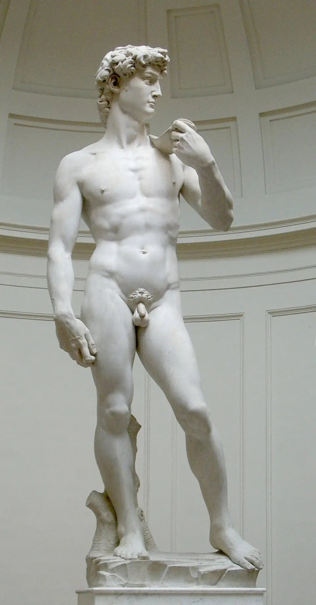
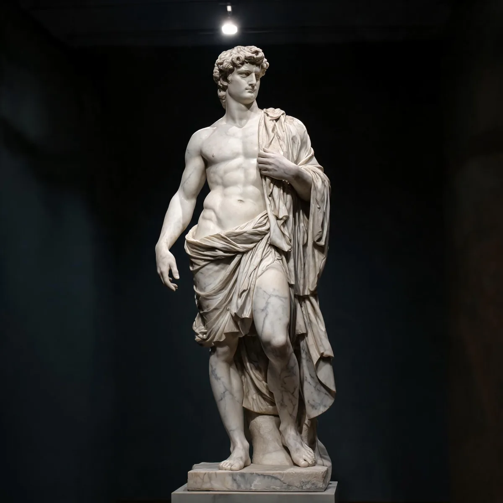
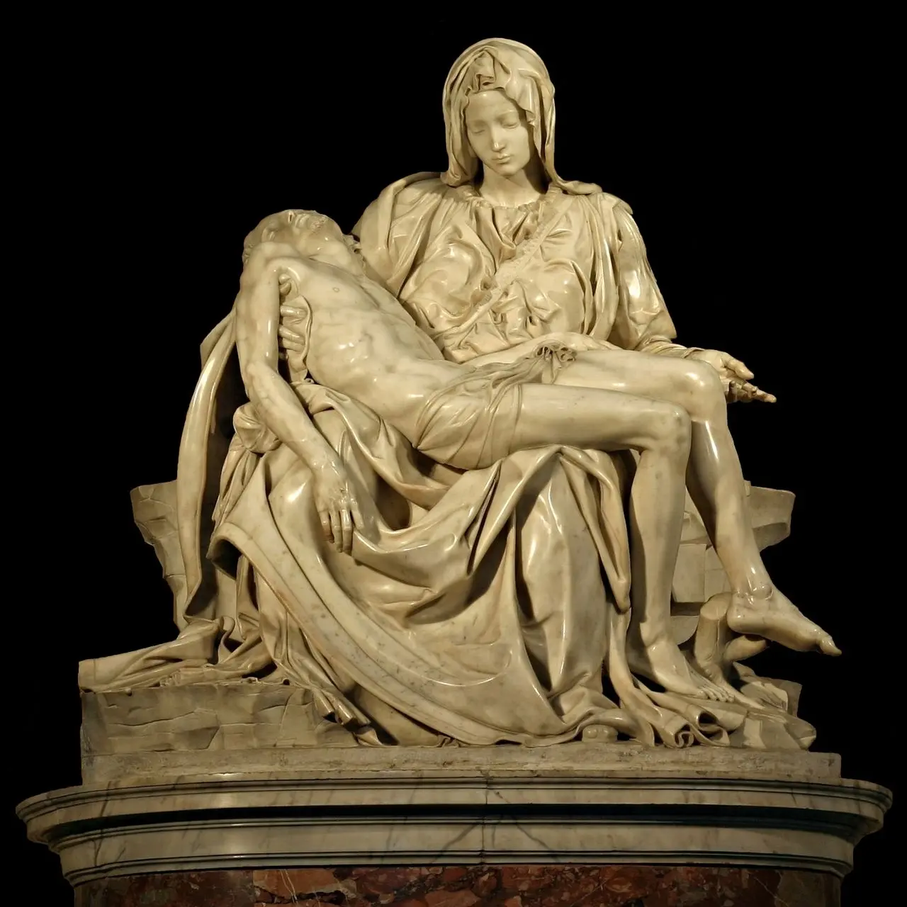
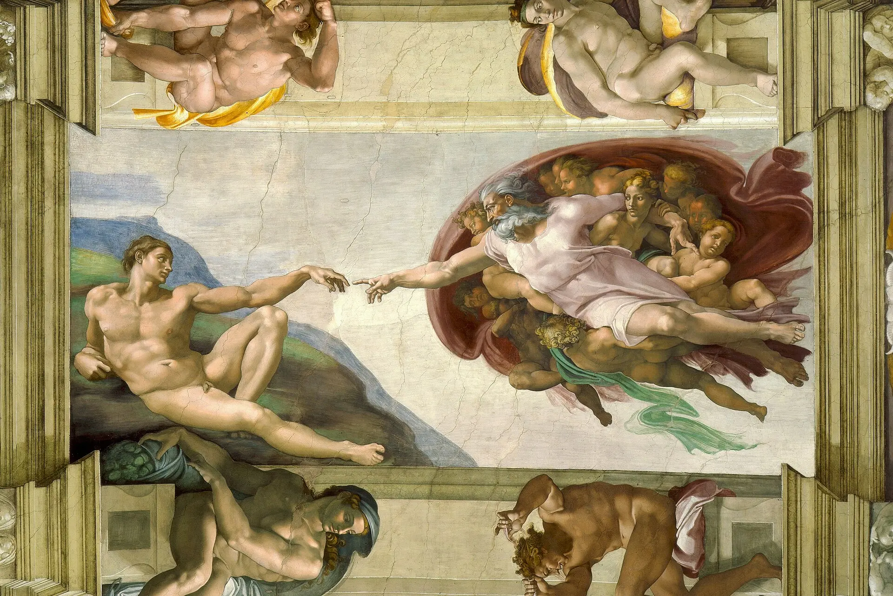
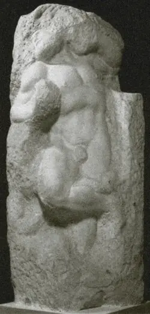
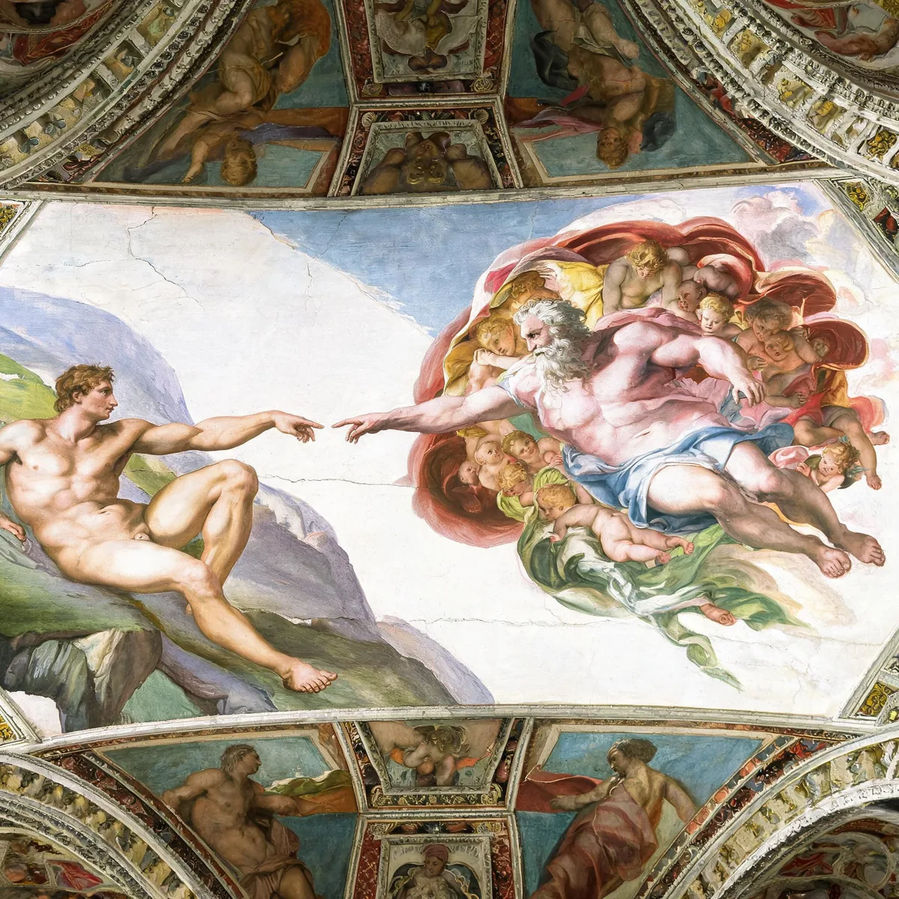
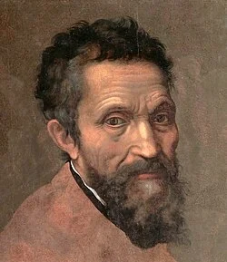

I
Anatomia — Natura contro Ideale
人体 / Anatomy

大卫（全身）1504
米开朗琪罗在圣灵教堂解剖过数十具尸体——肌肉的走向、骨骼的比例、每一条肌腱的位置，都有尸体解剖的精确依据。

大卫（手部）1504
但他从不照抄自然——右手比实际放大15%，青筋暴起到现实中不可能的程度。真实 vs 理想被他走成了同一条路。
米开朗琪罗在圣灵教堂的医院里解剖了 数十具尸体，对人体结构了如指掌。但他的大卫从不去复制任何一具真实的人体——它是人类对自身肉体的 最高想象。真实 vs 理想：他把两条路走成了同一条。
"他画的人体比真实的人体更真实。" — 贡布里希
II
Dramma — Intimo contro Monumentale
情感 / Emotion

《哀悼基督》1499
两个人物。一块石头。母亲抱着死去的儿子。所有情感压缩在衣袍的褶皱和低垂的目光里。

《最后的审判》1541
近200平方米，400个人物在末日中翻滚、挣扎、上升、坠落。全人类的故事压缩在一面墙上。
米开朗琪罗的情感跨度从 两个人的沉默 到 全人类的审判。他在23岁能雕出圣母最克制的悲伤，在60岁能画出400个人体在末日中的喧嚣。达·芬奇在细腻上比他好，拉斐尔在和谐上比他好——但没有人能在 同一个艺术家身上 找到这种从最小到最大的戏剧跨度。
"他不是一个艺术家，是一个剧场。"
III
Non-Finito — Compiuto contro Incompiuto
哲学 / Philosophy
《大卫》1504
每一寸被打磨到极致。肌肉、血管、表情——完全从石头中解放。完美的完成。

《苏醒的奴隶》1516
上半身已经挣脱，下半身永远留在石头里。米开朗琪罗故意停手。
从 完美完成 的《大卫》到 故意未完成 的《奴隶》，米开朗琪罗用三十年走完了从"做到极致"到"在致命一刻停手"的哲学路程。非弗尼托（non-finito）不是能力不足——是 刻意选择。人在物质中挣扎，但永远无法完全挣脱。承认这一点，比假装能做到，更深刻。
"最高贵的艺术不是完成——是快要完成。"
IV
Scala — Monumentale contro Personale
尺度 / Scale

《西斯廷穹顶》1512
500㎡。300人物。四年。一个人仰面在20米高的脚手架上画了3000多个工作日。

米开朗琪罗肖像 16世纪
断裂的鼻子、深邃的目光。一张脸上刻着一生的倔强、孤独和不肯妥协。
他能画一座 500平方米的穹顶，也能只关注 一张脸上的伤疤。文艺复兴三杰中，米开朗琪罗是唯一一个在最大尺度和最小尺度上都做到极致的人。达·芬奇没画过穹顶。拉斐尔37岁就去世了。米开朗琪罗活了89岁，做了三个人一生的工作量——而他认为自己 还什么都没做完。
"雕刻和绘画已不再能让我安宁——我的灵魂转向那份拥抱一切的爱。"
— 米开朗琪罗，80岁时的最后一首十四行诗